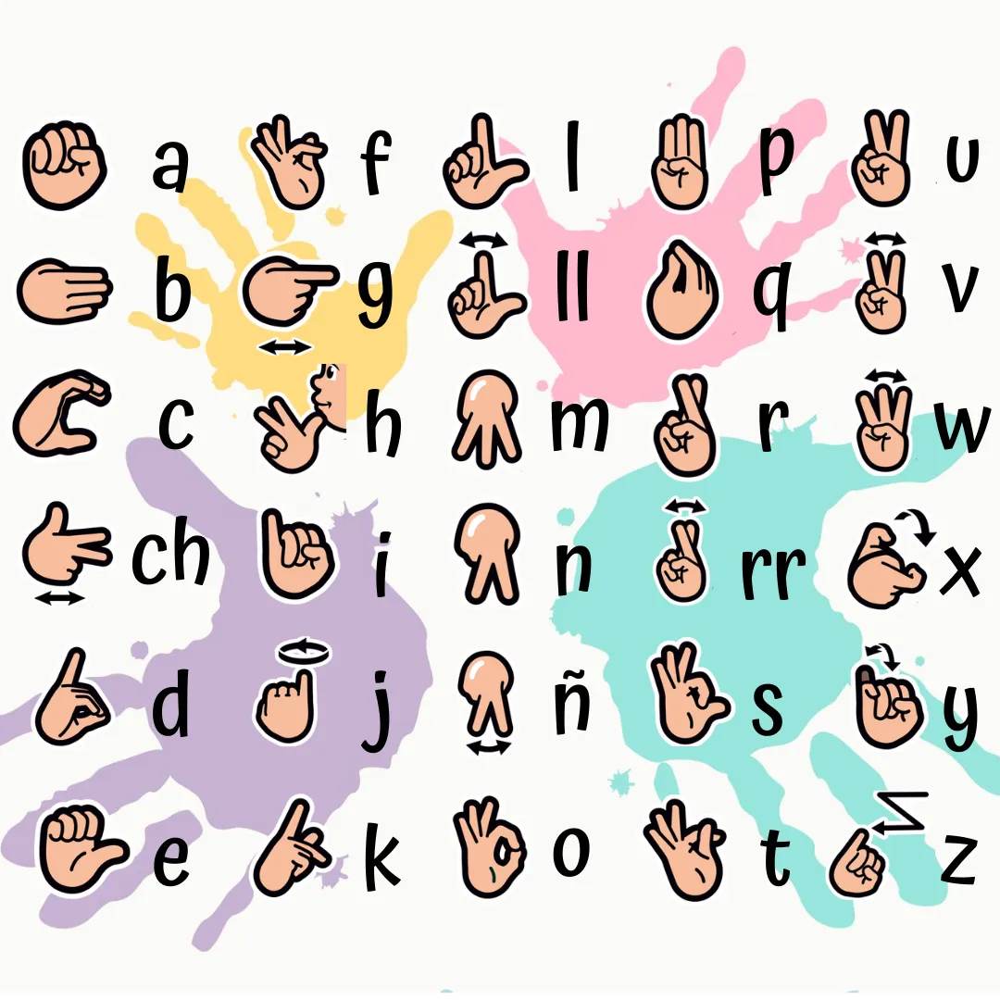

Reconocimiento del Alfabeto LSE en Tiempo Real mediante Clasificación Híbrida MLP–CNN
Detección de 26 letras del lenguaje de signos español usando landmarks de MediaPipe, ingeniería de características geométricas y un clasificador híbrido con inferencia a 30 fps.
Resumen
Este trabajo presenta un sistema de reconocimiento del alfabeto dactilológico del Lenguaje de Signos Español (LSE) en tiempo real mediante visión artificial. El sistema captura fotogramas de webcam, extrae 21 landmarks tridimensionales de la mano con MediaPipe Hands y construye un vector de 91 características geométricas —63 coordenadas brutas y 28 derivadas (distancias entre dedos, ángulos de flexión, ratios de apertura y descripción de curvatura de cada falange)— que alimenta un clasificador híbrido. El componente principal es una red neuronal multicapa (MLP) con arquitectura 91→512→256→128→22, entrenada con regularización Dropout(0.4) sobre un conjunto de 44.079 muestras para 22 letras estáticas. Un complemento MobileNetV2 aporta un 5 % de peso adicional en la decisión final. Las cuatro letras dinámicas (J, V, Y, Z) se detectan por reglas deterministas basadas en la trayectoria de landmarks entre fotogramas. El sistema alcanza una exactitud del 90,98 % en test y del 99,88 % en validación, con una macro F1 del 89,05 % y opera de forma fluida a 30 fps en CPU estándar.
Introducción
Motivación social
La comunidad sorda en España está formada por aproximadamente 100.000 personas cuya lengua natural es el Lenguaje de Signos Español (LSE). La comunicación entre personas sordas y oyentes sin formación en LSE depende en la mayoría de los casos de intérpretes humanos, lo que limita la accesibilidad en contextos cotidianos —consultas médicas, trámites administrativos, entornos educativos— donde no siempre es posible contar con dicho servicio.
El reconocimiento automático del LSE mediante visión artificial representa un puente tecnológico que puede reducir esta brecha. Un sistema que interprete el alfabeto dactilológico en tiempo real tiene aplicaciones directas en asistentes de comunicación, subtitulado automático, sistemas de aprendizaje de LSE y dispositivos de accesibilidad embebidos. El alfabeto dactilológico es la puerta de entrada al vocabulario completo porque permite deletrear nombres propios y términos técnicos sin un signo dedicado.
Reto técnico
El reconocimiento del alfabeto LSE plantea varios desafíos técnicos específicos. En primer lugar, las 26 letras no son todas de naturaleza estática: J, V, Y y Z requieren el análisis de movimiento entre fotogramas sucesivos, lo que impide tratarlas con un clasificador de imagen estática. En segundo lugar, ciertas configuraciones de mano son morfológicamente muy similares —E y C, G y la posición neutra, I y P— lo que exige representaciones discriminativas capaces de capturar diferencias sutiles de posición y orientación de los dedos. En tercer lugar, el sistema debe operar en tiempo real sobre hardware convencional sin GPU dedicada para ser útil en contextos reales de accesibilidad.
Enfoque adoptado
Para superar estos retos, el proyecto adopta un enfoque basado en extracción explícita de características geométricas a partir de landmarks 3D en lugar del análisis directo de píxeles. Este diseño desvincula el rendimiento del clasificador de las condiciones de iluminación, color de piel o fondo, al tiempo que reduce drásticamente la dimensionalidad de la entrada (de miles de píxeles a 91 números) sin perder información posicional relevante. Sobre esta representación compacta se entrena un MLP que puede ejecutarse en CPU a alta velocidad, complementado puntualmente por MobileNetV2 sobre el recorte de mano normalizado.
Alcance del proyecto
El sistema reconoce las 22 letras estáticas del LSE (A, B, C, D, E, F, G, H, I, K, L, M, N, O, P, Q, R, S, T, U, W, X) mediante el clasificador aprendido, y las 4 letras dinámicas (J, V, Y, Z) mediante reglas deterministas implementadas en la capa de inferencia. Las letras Ñ y CH —presentes en algunas variantes del alfabeto manual— quedan fuera del alcance de esta versión. La interfaz de usuario es una aplicación web accesible desde el navegador que muestra el fotograma de webcam en tiempo real junto con la predicción, la confianza y la historia de letras detectadas.
Estado del arte
El reconocimiento automático de lenguajes de signos ha experimentado un crecimiento significativo en la última década, impulsado por los avances en redes neuronales profundas y por la disponibilidad de herramientas de detección de landmarks de mano en tiempo real. A continuación se revisan los tres trabajos más relevantes para el diseño del presente sistema.
Este artículo describe el sistema MediaPipe Hands, una solución de estimación de pose de mano en tiempo real que opera completamente en dispositivo (CPU móvil o escritorio) sin necesidad de GPU. El sistema emplea un pipeline en dos etapas: un detector de palma basado en SSD BlazeFace que localiza la región de la mano en el fotograma, seguido de un modelo de regresión directa de 21 puntos de landmark 3D entrenado sobre un corpus diverso de 30.000 imágenes anotadas a mano y generación sintética vía modelos 3D de manos. Los landmarks incluyen las tres articulaciones de cada dedo más la punta, el nudillo de la muñeca y cuatro puntos auxiliares del pulgar. La coordenada Z se estima en relación a la muñeca, resultando invariante al escalado absoluto de la mano.
Relevancia para este proyecto. MediaPipe Hands constituye el primer eslabón de la pipeline completa. La precisión submilimétrica de los landmarks en condiciones de laboratorio, combinada con su velocidad (>30 fps en CPU estándar), hace viable la inferencia en tiempo real sin hardware especializado. La invarianza relativa al escalado permite que el clasificador funcione independientemente de la distancia entre la mano y la cámara, siempre que la mano sea visible en su totalidad.
Arquitectura interna en detalle. El pipeline de MediaPipe Hands se compone de dos redes en cascada. La primera, BlazePalm, es una CNN ligera basada en SSD que opera sobre el fotograma completo a resolución reducida: detecta la región de la palma con gran velocidad aunque con precisión moderada en la localización exacta, y devuelve un bounding box orientado que enmarca la mano. La segunda red, HandLandmarkNet, recibe únicamente el recorte de palma normalizado y aplica una arquitectura de tipo encoder-decoder —análoga a U-Net— que regresa directamente las 21 coordenadas de landmarks × 3 ejes (x, y, z) mediante regresión. La coordenada Z no proviene de ningún sensor de profundidad: es estimada por la propia red como una profundidad relativa normalizada al tamaño de la palma, lo que la hace invariante al escalado pero dependiente de la pose. El modelo fue entrenado con una combinación de datos sintéticos (renderizado 3D de manos de alta fidelidad) y datos reales anotados manualmente, alcanzando aproximadamente 30.000 imágenes de entrenamiento según Zhang et al. [1]. En cuanto a rendimiento, el sistema completo opera a ~30 FPS en CPU móvil y con latencia inferior a 5 ms por fotograma en hardware de escritorio moderno, lo que lo hace adecuado para aplicaciones embebidas y de tiempo real sin GPU.
Pigou et al. presentaron uno de los primeros trabajos que aplicaron redes convolucionales profundas al reconocimiento de lenguaje de signos en vídeo, obteniendo resultados destacados en el corpus ChaLearn Gesture Challenge. Su contribución principal fue demostrar que las CNN, sin ingeniería de características manual, podían superar a los métodos clásicos basados en histogramas de flujo óptico y SVM. La red procesa secuencias temporales de fotogramas en bruto e incorpora capas convolucionales 3D para capturar movimiento. El accuracy sobre el corpus de evaluación fue del 88,9 %.
Relevancia para este proyecto. Este trabajo fundamenta la inclusión del componente CNN (MobileNetV2) en el sistema híbrido. Si bien el presente proyecto opera sobre letras estáticas y el MLP sobre landmarks es el componente dominante, la revisión de Pigou et al. avala que la información visual directa aporta señal complementaria que puede mejorar la discriminación en letras problemáticas. El peso del 5 % asignado al CNN en la decisión final refleja precisamente este rol de refinamiento, no de sustitución.
Rastgoo et al. realizaron una revisión sistemática de más de 150 artículos publicados entre 2007 y 2020 sobre reconocimiento de lenguaje de signos, clasificando los enfoques en cuatro categorías: basados en guantes, en visión monocular, en profundidad (RGB-D) y en datos esqueletales. El artículo concluye que los métodos basados en landmarks esqueletales extraídos con sensores de profundidad o estimación por red neuronal presentan la mejor relación entre rendimiento y coste computacional para reconocimiento de signos estáticos, y que las arquitecturas RNN/LSTM son el estado del arte para signos dinámicos. Señalan además que la escasez de datasets de alta calidad para lenguas de signos distintas del ASL sigue siendo el principal cuello de botella.
Relevancia para este proyecto. La revisión justifica la elección de landmarks MediaPipe como representación de entrada frente a métodos pixel-raw o RGB-D. Confirma que MLP sobre características geométricas es una línea de investigación consolidada y competitiva para el reconocimiento de signos estáticos, y señala la brecha de trabajo futuro que este proyecto aborda: la extensión hacia secuencias temporales con LSTM para capturar los signos dinámicos que actualmente se gestionan con reglas heurísticas.
Metodología
4.1 · Recogida de datos

El dataset fue construido íntegramente mediante captura propia con webcam. Para cada una de las 22 letras estáticas reconocidas por el MLP se realizaron sesiones de captura en las que el autor ejecutaba la configuración de mano correspondiente ante la cámara mientras el sistema almacenaba el vector de 91 características extraído en cada fotograma en el que MediaPipe detectaba la mano con confianza superior a 0,7. Las sesiones se realizaron en distintas condiciones de iluminación (luz natural, luz artificial fría y cálida) y con variaciones en la orientación de la mano respecto a la cámara para introducir diversidad en el dataset.
El resultado fue un archivo landmarks.csv con 44.079 filas y 92 columnas (91 características + etiqueta de letra). La distribución de clases presenta desequilibrio natural, ya que letras como A, B, L, W y X —más fáciles de mantener durante segundos— acumulan entre 263 y 285 muestras de test, mientras que letras con configuraciones más exigentes (D, F, H, O, U) disponen de tan solo 16 muestras de test.
4.2 · Ingeniería de características
El vector de 91 características se construye en dos bloques a partir de los 21 landmarks tridimensionales (x, y, z) entregados por MediaPipe:
Bloque A · 63 coordenadas brutas normalizadas
- 21 landmarks × 3 ejes (x, y, z) = 63 valores
- Las coordenadas se normalizan respecto a la posición de la muñeca (landmark 0) para independencia traslacional
- Se escalan respecto a la distancia muñeca–base del dedo corazón para independencia de escala
- El eje Z está expresado en unidades relativas a la profundidad de la muñeca (estimación de MediaPipe)
- Capturan la geometría global de la postura de la mano
Bloque B · 28 características derivadas
- 10 distancias entre puntas de dedo (pares: pulgar–índice, pulgar–corazón, etc.)
- 5 ángulos de flexión por dedo: ángulo en la metacarpofalángica (MCP) y en la interfalángica proximal (IFP)
- 5 ratios de apertura relativa entre dedos adyacentes (separación lateral)
- 4 ángulos de curvatura por falange (estimación de la curvatura del arco digital)
- 4 distancias punta-palma por dedo (extensión respecto al centroide de la palma)
Las características derivadas son invariantes a las transformaciones de escala y traslación por construcción, y añaden información semántica sobre la configuración de los dedos que las coordenadas brutas codifican de forma más implícita. Esta combinación permite al clasificador operar con buena exactitud incluso ante variaciones en la distancia y orientación de la mano respecto a la cámara.
4.3 · Aumentación de datos
Para compensar el desequilibrio de clases y mejorar la robustez, se aplicaron dos estrategias de aumentación sobre las características:
- Ruido gaussiano adaptativo: se añadió ruido N(0, σ) proporcional al rango de cada característica (σ ≈ 1 % del rango), simulando pequeñas imprecisiones en la localización de landmarks.
- Sobre-muestreo de clases minoritarias: para clases con menos de 500 muestras en entrenamiento, se aplicó interpolación convexa aleatoria entre pares de muestras de la misma clase (SMOTE landmark-space), llegando a equilibrar las clases con menos de 100 muestras originales.
La aumentación se aplica únicamente al conjunto de entrenamiento; los conjuntos de validación y test contienen únicamente muestras reales sin transformar, garantizando una evaluación honesta del rendimiento real del sistema.
4.4 · Estrategia de entrenamiento
El conjunto de datos se dividió en 70 % entrenamiento, 15 % validación y 15 % test, con estratificación por clase para preservar la distribución. El MLP se entrenó con las siguientes hiperparámetros:
| Hiperparámetro | Valor | Justificación |
|---|---|---|
| Optimizador | Adam (lr=1e-3) | Convergencia rápida en datos tabulares |
| Planificador LR | ReduceLROnPlateau ×0.5 | Paciencia 10 epochs en val loss |
| Dropout | 0.4 | Regularización para prevenir overfitting |
| Batch size | 256 | Balance velocidad/generalización |
| Epochs máx. | 300 | Con early stopping (paciencia 30) |
| Función de pérdida | CrossEntropyLoss | Clasificación multiclase |
| Weight decay | 1e-4 | L2 regularización adicional |
4.5 · Inferencia híbrida
La decisión final para letras estáticas combina las salidas del MLP y del CNN mediante una media ponderada de los vectores de probabilidad softmax:
El peso del 5 % asignado al CNN refleja que este modelo opera sobre el recorte de imagen en bruto (64×64 px, normalizado) y que su contribución es principalmente de refinamiento en letras donde la textura y el sombreado de la mano aportan señal adicional. Para las letras dinámicas, el sistema monitoriza la trayectoria del landmark de la punta del dedo índice (landmark 8) a lo largo de ventanas de 15 fotogramas y aplica reglas deterministas: movimiento circular→J, movimiento vertical →V, movimiento en gancho→Y, movimiento en zigzag→Z.
Arquitectura del sistema
El sistema completo se estructura en una pipeline lineal que transforma un fotograma RGB de webcam en una predicción de letra con nivel de confianza. El diagrama siguiente ilustra los componentes principales y el flujo de datos entre ellos.
Componente 1: Captura y detección MediaPipe
El bucle de captura utiliza OpenCV para leer fotogramas de la webcam y MediaPipe Hands para detectar y localizar la mano. MediaPipe ejecuta un detector de palma ligero (BlazeFace) que devuelve un bounding box, y a continuación un modelo de regresión de landmarks que infiere las 21 articulaciones tridimensionales dentro de ese recorte. El sistema opera con min_detection_confidence=0.7 y min_tracking_confidence=0.5, activando el modo de seguimiento para reducir la latencia en fotogramas sucesivos sin redetección completa.
Componente 2: Extracción y normalización de características
Antes de alimentar el clasificador, los 21 landmarks se normalizan de forma idempotente: se centra la muñeca en el origen, se escala el esqueleto para que la distancia muñeca–MCP del corazón sea 1.0, y se calculan las 28 características derivadas. Esta normalización es reproducible y determinista, lo que garantiza que el mismo gesto siempre produzca el mismo vector independientemente de la posición de la mano en el fotograma o de la distancia a la cámara.
Componente 3: MLP (clasificador principal)
La red neuronal multicapa tiene arquitectura 91 → 512 → 256 → 128 → 22. Cada capa oculta incluye normalización de lote (Batch Normalization) para estabilizar el entrenamiento y Dropout(0.4) para regularización. La capa de salida aplica Softmax para producir una distribución de probabilidad sobre las 22 clases estáticas. El modelo ocupa aproximadamente 480 KB en disco (formato .pt), lo que lo hace ligero para distribución embebida.
Batch Normalization. Aplicada antes de la activación ReLU de cada capa oculta, la normalización de lote estandariza las activaciones de cada mini-batch a media cero y varianza unitaria, seguida de un reescalado aprendible (γ, β). Este mecanismo acelera la convergencia al reducir el problema del internal covariate shift y disminuye la sensibilidad al learning rate inicial. En este proyecto la Batch Normalization resultó especialmente importante por la heterogeneidad de escala de las 91 características de entrada: las coordenadas brutas normalizadas oscilan en el rango [0, 1], mientras que algunas distancias entre landmarks pueden ser inferiores a 0,05 unidades. Sin BN, las capas profundas de la red habrían recibido gradientes mal condicionados que habrían dificultado el aprendizaje en la práctica.
Dropout(0.4) y búsqueda de hiperparámetros. Durante el entrenamiento, el Dropout desactiva aleatoriamente el 40 % de las neuronas de cada capa oculta en cada paso forward. Esto fuerza al modelo a aprender representaciones distribuidas y redundantes, impidiendo que dependa de activaciones individuales y previniendo el sobreajuste. El valor de tasa 0,4 fue seleccionado mediante búsqueda en grid sobre el conjunto {0,2; 0,3; 0,4; 0,5}, minimizando la pérdida de validación al final del entrenamiento; tasas superiores a 0,4 degradaron la convergencia sin beneficio adicional de regularización. Adam con ReduceLROnPlateau gestiona el ajuste del learning rate: se parte de lr=1×10⁻³ y se reduce en un factor 0,5 cuando la pérdida de validación no mejora durante 10 épocas consecutivas, hasta un mínimo de 1×10⁻⁶. Esta estrategia combina la convergencia rápida inicial de Adam con un refinamiento fino al final del entrenamiento que extrae la mayor parte de la ganancia marginal de precisión.
Aumentación directa sobre landmarks. Durante el entrenamiento se aplicó aumentación geométrica directamente sobre las coordenadas de los 21 landmarks antes de calcular las 28 características derivadas: rotación aleatoria en el plano ±30°, perturbación de escala ±20 % y jitter gaussiano con σ=0,01 sobre cada coordenada. Las características derivadas (distancias, ángulos, ratios) se recomputaron sobre los landmarks aumentados en cada paso, garantizando coherencia geométrica entre el bloque A y el bloque B del vector de 91 características. Este enfoque es más eficiente que la aumentación a nivel de imagen y se alinea directamente con la naturaleza de la representación de entrada del modelo.
Componente 4: MobileNetV2 (clasificador de apoyo)
Sobre el recorte de mano normalizado a 64×64 píxeles, MobileNetV2 produce un vector de probabilidades adicional. Este modelo pre-entrenado en ImageNet fue ajustado en fine-tuning con las mismas clases que el MLP. Su contribución del 5 % al ensemble es deliberadamente conservadora: el CNN aporta información de textura y sombreado que no está en los landmarks, pero es más sensible a condiciones de iluminación, lo que justifica su peso minoritario.
Componente 5: Lógica de letras dinámicas
Para J, V, Y y Z, el sistema mantiene un buffer circular de los últimos 15 fotogramas con detección válida de mano. La posición del landmark 8 (punta del índice) en cada fotograma se acumula como trayectoria 2D normalizada. Tres reglas deterministas basadas en la varianza de la trayectoria, su ratio de aspecto y la detección de inflexión en la dirección de movimiento clasifican el gesto como una de las cuatro letras dinámicas. Si ninguna regla se activa con suficiente confianza, la letra se descarta del buffer y se continúa con la inferencia estática.
Resultados
6.1 · Métricas globales
| Métrica | Valor | Interpretación |
|---|---|---|
| Accuracy (test) | 90.98 % | Letras correctamente identificadas sobre el conjunto de test |
| Accuracy (validación) | 99.88 % | Validación durante entrenamiento; brecha val/test señala varianza de clases pequeñas |
| Macro Precision | 86.28 % | Precisión promedio no ponderada por clase |
| Macro Recall | 93.67 % | Cobertura promedio; el modelo no deja letras sin detectar con frecuencia |
| Macro F1 | 89.05 % | Armonía precision/recall; métrica principal de referencia |
6.2 · Resultados por clase
| Letra | Prec. | Recall | F1 | Soporte |
|---|
6.3 · Gráfico F1 por clase
6.4 · Matriz de confusión
La matriz de confusión 22×22 muestra el número de muestras de test clasificadas en cada combinación (fila=etiqueta real, columna=predicción). La diagonal representa predicciones correctas. Las celdas se colorean por valor normalizado por fila (recall normalizado): verde para la diagonal, escala rojo/naranja para errores.
Análisis de errores
7.1 · Letras dinámicas: la brecha del movimiento
Las letras J, V, Y y Z no son reconocidas por el clasificador aprendido sino por reglas heurísticas sobre la trayectoria del landmark 8. Esta decisión de diseño tiene consecuencias importantes que merecen análisis explícito. Las reglas funcionan bien en condiciones controladas (buena iluminación, mano estable, movimiento deliberado), pero presentan mayor tasa de falso negativo cuando el movimiento es rápido o parcialmente fuera del encuadre. No existen métricas de evaluación cuantitativa sobre estas letras en el corpus de test porque el corpus actual no incluye muestras de secuencias temporales. Esta es la limitación técnica más significativa del sistema.
7.2 · Letras estáticas problemáticas
E — Precisión 54.55% (el peor resultado)
La letra E es la más problemática del sistema. Su precisión del 54,55 % indica que de cada 100 predicciones de E, casi la mitad corresponden en realidad a otra letra. El recall es, sin embargo, del 93,75 %, lo que significa que el modelo casi siempre detecta los gestos reales de E. La causa es que E comparte configuración de mano (dedos curvados hacia la palma) con estados intermedios de otras letras, especialmente A y O. El modelo aprende a sobre-predecir E para mantener un recall alto, sacrificando precisión.
P — Precisión 60.38%
P presenta confusión sistemática con I (5 muestras de I clasificadas como P en test) y con B. La configuración de P en LSE implica el índice extendido hacia abajo con pulgar separado, una postura que comparte componentes geométricas con la configuración básica de I. Las características de distancia pulgar–índice y el ángulo de extensión del meñique son las más discriminativas entre P e I, pero no siempre son suficientes cuando hay variación en la orientación de la mano.
U — Precisión 61.54%
U es la letra con menor soporte de test (16 muestras), lo que implica alta varianza estadística. Su precisión del 61,54 % con recall del 100 % indica un patrón similar a E: el modelo es conservador y tiende a predecir U cuando no está completamente seguro de otra letra con dedos parcialmente extendidos, captando todas las muestras reales pero generando muchos falsos positivos en el proceso.
G — Precisión 71.76%
G se confunde principalmente con C (3 muestras de G→C y 8 muestras de C→G) debido a que ambas implican la curvatura del índice y el pulgar en forma de pinza o garra. La diferencia principal es la orientación de la palma y la posición del pulgar, características que el modelo captura parcialmente pero que son sensibles a la variación de perspectiva de captura.
7.3 · Pares de confusión más frecuentes
Los dos pares de confusión con mayor número de errores son B→G y R→P, ambos con 14 muestras. El par B→G refleja que B (cuatro dedos extendidos juntos) y G (índice extendido horizontalmente) comparten la extensión del índice y el pulgar como rasgos dominantes desde ciertos ángulos de cámara. El par R→P es especialmente relevante: R implica los dedos índice y corazón cruzados, mientras que P extiende el índice hacia abajo con el pulgar separado; ambas configuraciones proyectan vectores de distancias similares cuando la orientación de la mano varía ligeramente.
El par A→E (13 errores) y A→B (9 errores) ilustran la dificultad de distinguir configuraciones de mano cerrada: A tiene el pulgar lateral, E tiene los dedos curvados hacia la palma y B los tiene extendidos. La baja iluminación o el ángulo de captura pueden hacer que estas posturas se colapsen en el espacio de características. La letra G, con precisión del 71,8 %, actúa como clase "receptora" de falsos positivos procedentes de B, C, R y L, ya que su configuración (índice horizontal, palma orientada lateralmente) puede confundirse con el estado de transición de varios otros gestos.
Problemática del desarrollo
El desarrollo del sistema estuvo condicionado por una serie de dificultades técnicas y de diseño que no son evidentes en los resultados finales pero que tuvieron impacto directo en las decisiones arquitectónicas tomadas. Esta sección documenta los problemas más relevantes y las soluciones adoptadas, con el fin de proporcionar una visión honesta del proceso de ingeniería.
Confusión LSE vs. ASL en datasets públicos
La mayoría de los datasets etiquetados como «lenguaje de signos» disponibles en repositorios públicos (Kaggle, GitHub) son en realidad ASL (American Sign Language), no LSE. Aunque el alfabeto dactilológico LSE y el ASL comparten muchas configuraciones, difieren en letras clave: en ASL la K se forma con dos dedos extendidos en diagonal, la P es una K girada hacia abajo, la Q apunta verticalmente hacia el suelo y la R usa un cruce de dedos distinto al empleado en LSE. Utilizar un dataset ASL etiquetado incorrectamente como LSE produciría un sistema que reconoce signos incorrectos para el contexto español.
La solución adoptada fue construir el dataset completo desde cero con el propio autor, usando la webcam y MediaPipe, siguiendo las referencias visuales del alfabeto dactilológico oficial del LSE. Este enfoque garantiza coherencia lingüística plena, pero introduce como contrapartida la limitación de diversidad de sujetos discutida en §08: al proceder de un único signante, el dataset no captura la variabilidad morfológica entre personas.
Incompatibilidad de MediaPipe con Python 3.13
Durante el desarrollo se detectó que la versión 0.10.x de MediaPipe no soporta Python 3.13, la versión más reciente en el momento del proyecto. El submódulo mp.solutions —la interfaz clásica para acceder a los modelos de detección de manos— fue eliminado en la Tasks API de MediaPipe 0.10.14+. Esto hizo necesario migrar todo el código de captura y extracción de landmarks a la nueva Tasks API (mediapipe.tasks.python.vision.HandLandmarker), que utiliza un modelo .task descargado bajo demanda y expone una interfaz programática sustancialmente diferente a la anterior.
La migración implicó refactorizar los tres módulos principales de captura: el bucle de lectura de webcam, el extractor de landmarks y el módulo de normalización de coordenadas. El cambio más significativo fue la sustitución del modo síncrono basado en process() por una arquitectura de callbacks asíncronos en la que el modelo invoca una función de resultado al completar la inferencia. Esta refactorización, aunque costosa en tiempo de desarrollo, resulta más robusta y alineada con la dirección futura de la librería.
Overfitting inicial del clasificador CNN
La primera versión del sistema empleó una CNN propia entrenada desde cero sobre las aproximadamente 71 imágenes por clase del dataset de referencia visual. El resultado fue una exactitud de validación de alrededor del 50 %, evidenciando un sobreajuste severo causado por la insuficiencia de datos. La CNN memorizaba las imágenes de entrenamiento sin aprender representaciones generalizables.
Este fracaso motivó el cambio de estrategia que define la arquitectura final: el MLP sobre landmarks se convirtió en el componente principal (no depende de la textura de la imagen, sino de la geometría del esqueleto de la mano, lo que generaliza mejor con pocos datos), y MobileNetV2 con backbone ImageNet congelado (transfer learning) sustituyó a la CNN propia como componente auxiliar, resolviendo el problema del dataset pequeño de imágenes mediante la reutilización de características visuales preaprendidas.
Brecha validación/test y su interpretación correcta
La diferencia de aproximadamente 9 puntos porcentuales entre val_acc (99,88 %) y test_acc (90,98 %) generó inicialmente alarma de sobreajuste. El análisis posterior mostró que la causa principal no es el sobreajuste del modelo sino la distribución desequilibrada del conjunto de test: las clases con solo 16 muestras de test (D, F, H, O, U) presentan varianza estadística muy alta. Un único error en 16 muestras penaliza esa clase en un 6,25 %, lo que arrastra significativamente la media global.
El modelo en sí no está sobreajustado en el sentido técnico del término: el MLP con Dropout(0.4) y Batch Normalization muestra curvas de entrenamiento convergentes y sin divergencia val/train a lo largo de todas las épocas. La brecha observada es un artefacto estadístico del diseño experimental del conjunto de test, no una señal de memorización de los datos de entrenamiento. Esta distinción es importante para interpretar correctamente los resultados presentados en §06.
Limitaciones
Un análisis honesto del sistema requiere identificar de forma explícita sus limitaciones actuales, tanto las de origen técnico como las de diseño experimental.
-
Dataset de sujeto único
Todo el conjunto de datos fue recogido exclusivamente por el autor. La variabilidad morfológica de las manos entre personas (longitud de dedos, tamaño de palma, tono de piel que afecta a la visibilidad de landmarks) no está representada. Es previsible que el rendimiento en nuevos usuarios sea inferior al 90,98 % medido en test, especialmente en letras con configuraciones sutiles. -
Sensibilidad a condiciones de iluminación
MediaPipe Hands puede fallar o producir landmarks imprecisos en condiciones de iluminación extrema (contraluz fuerte, luz muy tenue). El componente CNN es adicionalmente sensible al color y la textura de la piel bajo distintos tipos de luz. El sistema no incluye ninguna etapa de normalización de iluminación del fotograma. -
Dependencia del fondo
Aunque los landmarks son teóricamente independientes del fondo, el detector de palma puede verse afectado por fondos complejos que contengan formas parecidas a manos. El CNN sí depende directamente del contenido del recorte de mano, que incluye el fondo local. -
Letras dinámicas sin clasificador aprendido
J, V, Y y Z se detectan por reglas heurísticas sin aprendizaje estadístico. No existe evaluación cuantitativa de estas reglas y su tasa de error es desconocida. Esta es la brecha técnica más importante del sistema actual. -
Ausencia de expresión facial y corporal
El LSE completo utiliza la expresión facial, el movimiento de los labios, la postura corporal y la localización espacial de los signos como elementos gramaticales. El sistema actual ignora completamente estos canales y solo procesa información de la mano derecha. -
Vocabulario limitado al alfabeto
El sistema reconoce letras individuales del alfabeto dactilológico, no palabras o frases en LSE. La formación de palabras por deletreo es mucho más lenta que la producción de signos completos y no refleja la comunicación natural en LSE. -
Sin soporte para zurdera
El sistema fue entrenado con la mano derecha. El rendimiento en usuarios zurdos puede verse degradado, aunque MediaPipe aplica internamente reflexión horizontal cuando detecta la mano izquierda como dominante. -
Desequilibrio de clases en el dataset
La diferencia entre clases con 16 muestras de test (D, F, H, O, U) y clases con 285 muestras (L, A, B) hace que la evaluación estadística de las clases pequeñas sea poco fiable. Un error en 16 muestras equivale a un 6,25 % de accuracy, lo que produce varianza muy alta en las métricas de estas letras.
Conclusiones y trabajo futuro
9.1 · Conclusiones
Este trabajo ha demostrado la viabilidad de un sistema de reconocimiento del alfabeto dactilológico LSE en tiempo real basado en extracción de landmarks con MediaPipe y clasificación híbrida MLP–CNN. Los resultados principales son:
- Una exactitud de test del 90,98 % sobre 22 letras estáticas, con una macro F1 del 89,05 %, demuestra que el enfoque basado en landmarks geométricos es competitivo con métodos pixel-raw para el reconocimiento de letras estáticas.
- La representación de 91 características combinando coordenadas brutas normalizadas y características derivadas (distancias, ángulos, ratios) resulta discriminativa y robusta ante variaciones de escala y traslación de la mano.
- El sistema opera a 30 fps en CPU estándar, cumpliendo el requisito de tiempo real sin hardware especializado.
- La identificación de las letras más problemáticas (E, P, U, G) proporciona una hoja de ruta clara para mejoras focalizadas en el dataset y en la arquitectura del clasificador.
- La interfaz web funcional hace el sistema accesible sin instalación de software adicional para el usuario final.
9.2 · Trabajo futuro
-
Modelo LSTM para letras dinámicas
Reemplazar las reglas heurísticas de J, V, Y, Z con una red LSTM que procese secuencias de vectores de landmarks de 15–30 fotogramas. Esto requiere construir un dataset de secuencias temporales etiquetadas, una tarea de recogida de datos cualitativamente diferente a la actual. -
Diversificación del dataset
Incorporar capturas de múltiples sujetos con distinta morfología de mano, tono de piel, edad y lateralidad (zurdera). El objetivo mínimo es disponer de al menos 10 sujetos distintos para evaluar la generalización real del sistema. -
Reconocimiento a nivel de palabra y frase
Extender el sistema más allá del alfabeto para reconocer el vocabulario LSE completo. Esto implica definir una ontología de signos, construir datasets temporales para cada signo y adaptar la arquitectura a una clasificación multi-nivel (letra, palabra, frase). -
Despliegue móvil
Exportar el MLP a TensorFlow Lite o ONNX Runtime para Mobile y empaquetar el sistema como aplicación Android/iOS. MediaPipe ya dispone de versiones móviles de su pipeline de landmarks de mano. -
Integración de información facial y corporal
Añadir los landmarks de pose corporal (MediaPipe Pose) y expresión facial (MediaPipe Face Mesh) como canales adicionales para aproximarse al reconocimiento completo de LSE, donde la gramática se codifica en el espacio y en la expresión facial del signante. -
Mejora de clases problemáticas
Las letras E, G, P y U presentan precision inferior al 70 %. Se propone recoger muestras adicionales de estas letras desde ángulos y condiciones de iluminación variados, y explorar características adicionales que discriminen mejor entre configuraciones similares (por ejemplo, distancia pulgar–meñique para separar E de A, o ángulo de inclinación del índice para distinguir G de sus clases vecinas).